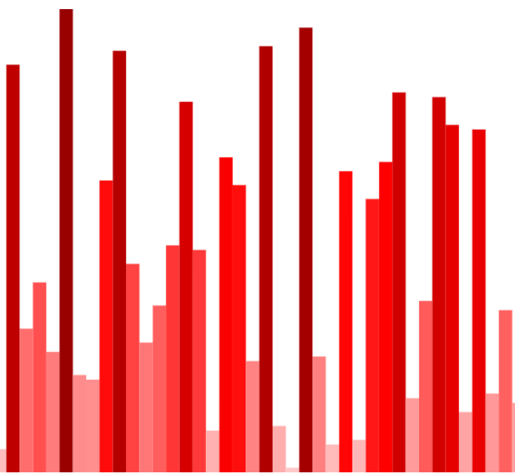

Projects
Sort Visualizer
JavaScript, HTML, and CSS used to create a visualization tool for conventional sorting algorithms. The tool allows users to select an algorithm and then generates a step-by-step animation of the sorting process. Animation involves bars with heights corresponding to their values and a dynamic colour gradient.
Chess Bot
Python and Pygame module used to create functioning chess game and simple bot based on minimax algorithm.
